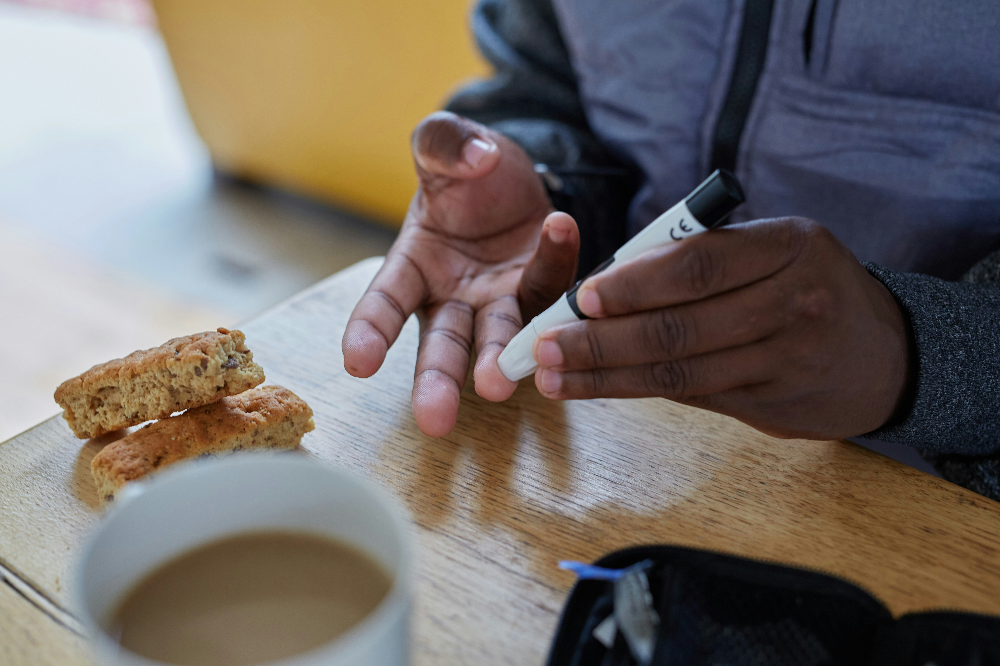
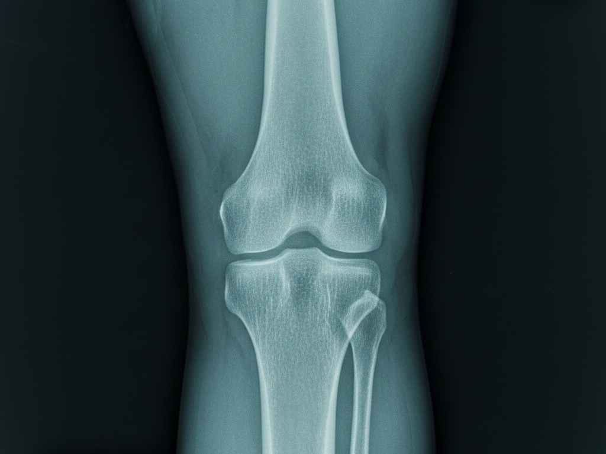
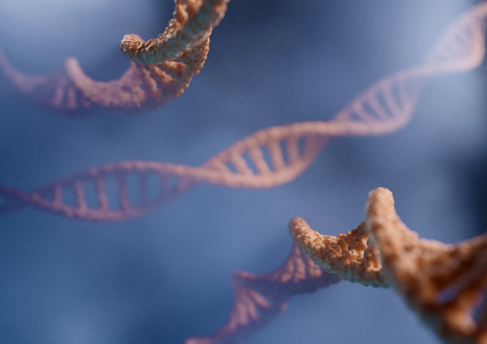

重點項目
糖尿病 (Diabetes)
胰島 β 細胞再生與功能修復
傳統糖尿病治療往往只能依賴藥物或胰島素控制血糖，無法解決胰島功能衰退的根本問題。ImStem 的 PL11S-TMSC 技術，結合獨家「胰腺內動脈導管遞送」，能將高活性的幹細胞精準送達胰腺。
治療優勢
- 促進再生：誘導內源性胰島 β 細胞再生，恢復胰島素分泌功能。
- 免疫調節：改善慢性發炎狀態，減少對胰島細胞的自身免疫攻擊。
- 併發症預防：改善全身微循環，預防糖尿病足、視網膜病變與腎病變。

退化性關節炎 (Osteoarthritis)
軟骨修復與抗炎止痛
隨著年齡增長或過度使用，關節軟骨磨損會導致疼痛與行動不便。間質幹細胞 (MSC) 具有強大的分化潛能與抗炎作用，是「保膝不換膝」的理想選擇。
治療機制
- 軟骨再生：分化為軟骨細胞，填補磨損的關節表面。
- 抑制發炎：分泌抗炎因子，顯著緩解關節紅腫熱痛。
- 潤滑關節：促進關節液分泌，改善關節活動度。

自體免疫疾病 (Autoimmune Diseases)
免疫系統的雙向調節
針對紅斑性狼瘡 (SLE)、類風濕性關節炎 (RA)、乾癬等疾病，幹細胞能發揮獨特的「免疫調節」作用，而非單純的免疫抑制，從而減少類固醇與免疫抑制劑的副作用。
適用範疇
- 系統性紅斑狼瘡：改善腎臟與皮膚症狀，穩定病情。
- 類風濕性關節炎：減緩骨質破壞，控制晨僵與疼痛。
- 頑固性皮膚病：如乾癬、異位性皮膚炎的深層修復。

神經系統修復 (Neurology)
重建神經網絡連結
神經細胞一旦受損極難再生。幹細胞療法為中風後遺症、帕金森氏症、脊髓損傷患者帶來了新希望，透過分泌神經營養因子 (NGF, BDNF) 促進神經修復與軸突生長。
改善目標
- 中風復健：改善肢體運動功能、語言能力與吞嚥功能。
- 退化性腦病：延緩阿茲海默症與帕金森氏症的進程。
- 脊髓損傷：促進感覺與運動神經傳導的恢復。

抗衰老與亞健康 (Anti-aging)
從細胞層面重返年輕
衰老的本質是幹細胞數量的減少與活性的降低。透過補充高品質的外源性幹細胞，可以激活體內休眠的細胞，提升整體代謝水平，改善睡眠、體力與皮膚狀況。
預期效益
- 機能提升：改善慢性疲勞、提升專注力與記憶力。
- 外觀年輕化：皮膚緊緻度提升、皺紋減少、氣色紅潤。
- 男性/女性保養：改善性功能與更年期症狀。